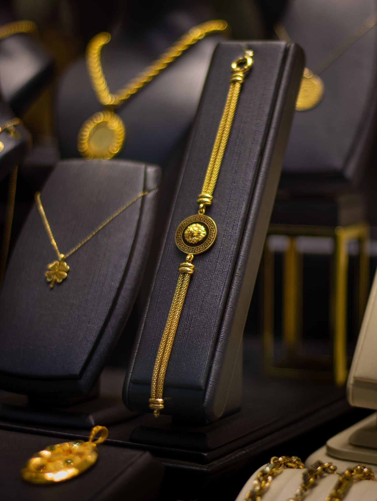
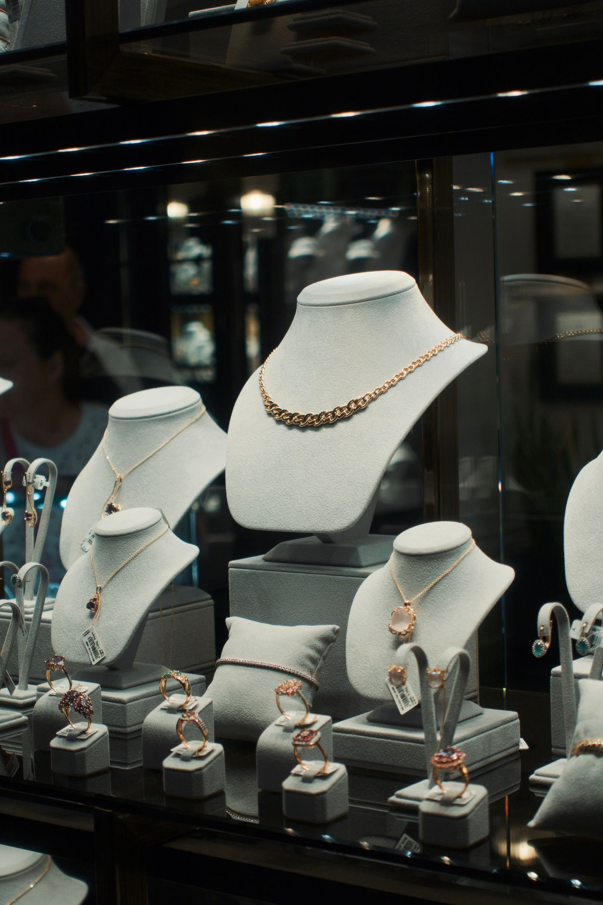
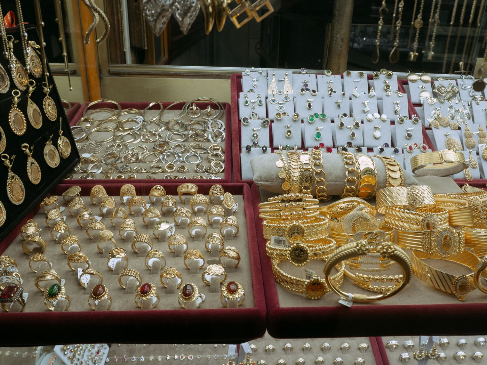

John Cauley Jeweler
Custom jewelry design and in-house repair in Midtown Mobile

About
John Cauley Jeweler offers custom jewelry design and repair on premises in Mobile, by a Graduate Gemologist and Master Jeweler with more than 40 years of experience. The shop is a multi-room showroom that visitors have called a hidden gem.
A walk through the showroom
Custom design
Custom jewelry designed in the shop.
In-house repair
Jewelry repair done on premises.

Estate jewelry
Estate pieces, including 1980s necklaces with emeralds, rubies, and diamonds featured in a local gift guide.

Diamond engagement rings
Diamond engagement rings, including a .60 carat diamond ring featured in the shop's listings.
Sorrelli crystal jewelry
Sorrelli crystal jewelry, with daily specials shared in the shop's private Facebook group.
Jewelry for men and women
Jewelry for men and women, with credit cards accepted.
The showroom
A multi-room showroom with coffee service and a wheelchair-accessible floor.
Credentials
Work is done by a Graduate Gemologist and Master Jeweler with more than 40 years of experience. The shop was named to InStore magazine's America's Coolest Stores small-cool list in August 2022.
Gallery
All gallery photos are stock photos, labeled as such. They show the kind of work and setting described on this page, not this business.
Visit
Address: 15 Upham St, Mobile, AL
Hours: Tuesday to Friday 10am to 5pm, Saturday 10am to 2pm. Sunday and Monday hours are not listed, so call to ask about them.
Phone: +1 251-660-4759
Contact
John Cauley Jeweler serves Mobile. Questions? Call +1 251-660-4759.